Zona Escolar 050
Zona Escolar 050Por qué rescatar las tablets
En algunas escuelas de la zona hay cajas con tablets que llegaron hace años. Funcionan, pero tienen Android 4.4: casi ninguna app de la tienda se puede instalar ya, el navegador no abre bien las páginas de hoy y terminaron guardadas.
La Supervisión está desarrollando Tablet-Tini, una app hecha a la medida de esas tablets: ligera, en español y pensada para que los niños la usen sin ayuda.
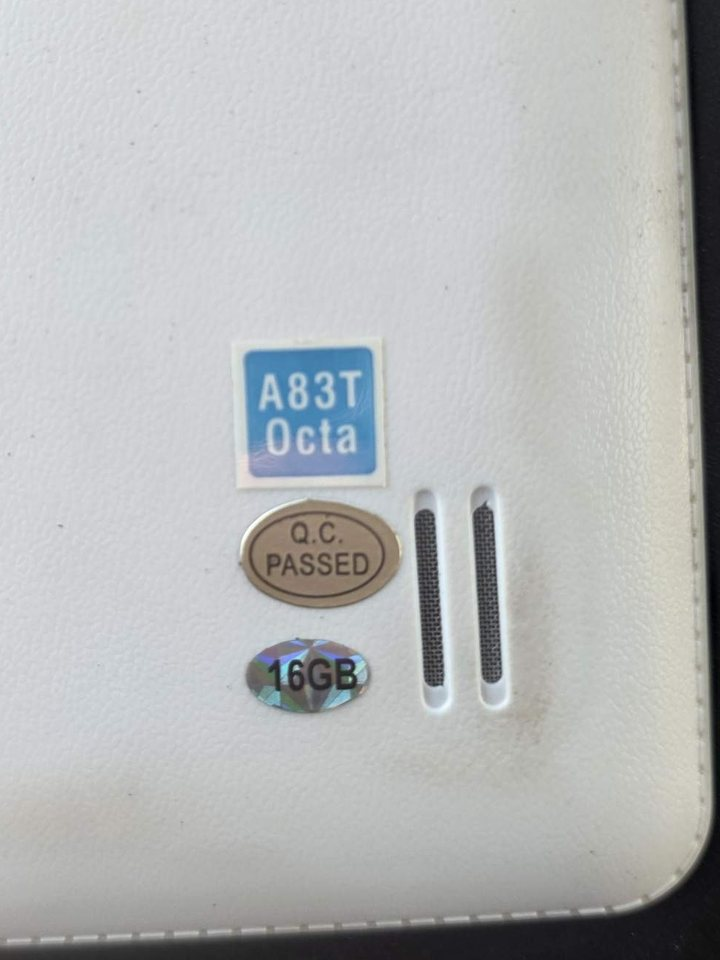
Lo que podrán hacer los alumnos
Al prender la tablet aparece Tablet-Tini. El alumno toca su grado y elige qué quiere hacer: cada actividad se ajusta a lo que corresponde a su grado.
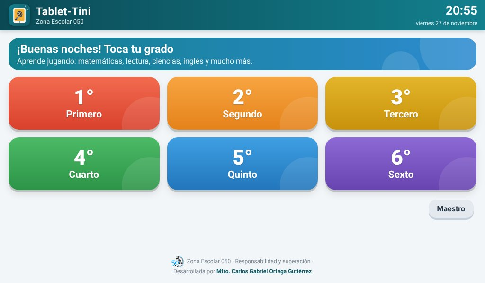
Fácil de usar desde el primer día
Botones grandes y de colores, pensados para dedos pequeños. Sin anuncios, sin cuentas y sin contraseñas para el alumno.
Cada actividad termina con estrellas según sus aciertos, para que quieran volver a intentarlo.
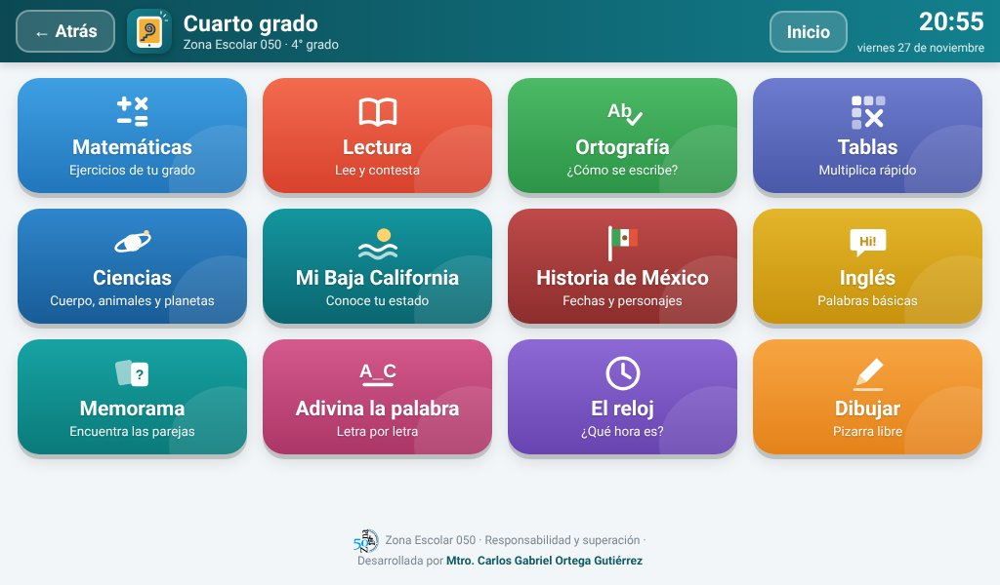
Hasta doce actividades
- Matemáticas y Tablas de multiplicar.
- Lectura con preguntas de comprensión y Ortografía.
- Ciencias, Mi Baja California e Historia de México.
- Inglés con palabras básicas.
- Memorama, Adivina la palabra, El reloj y una pizarra para Dibujar.
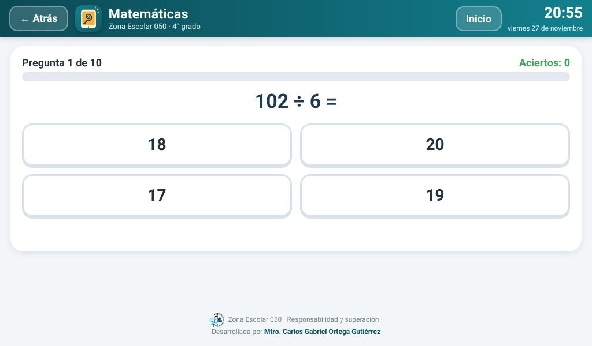
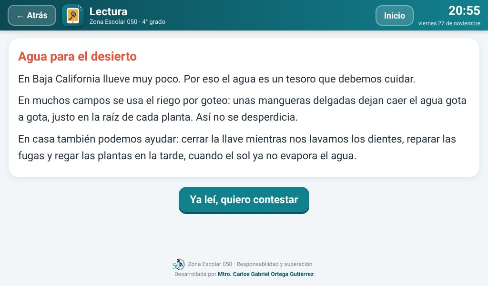
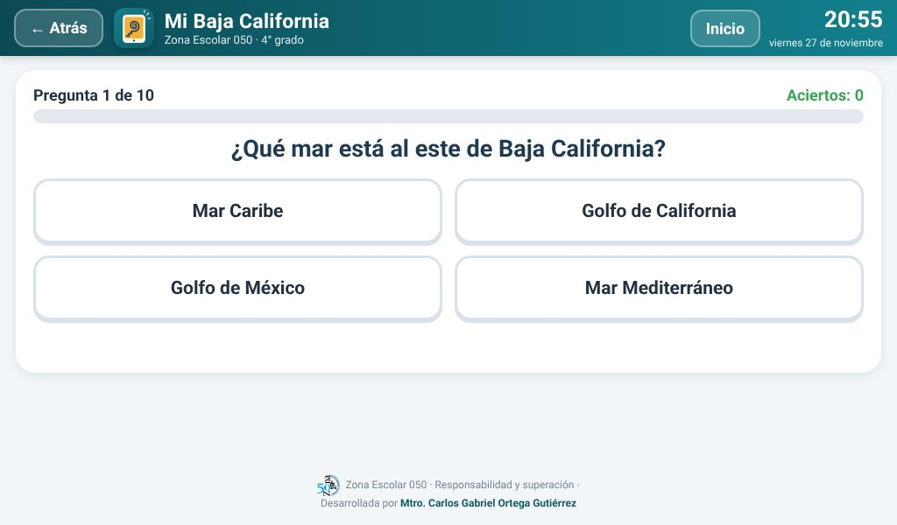
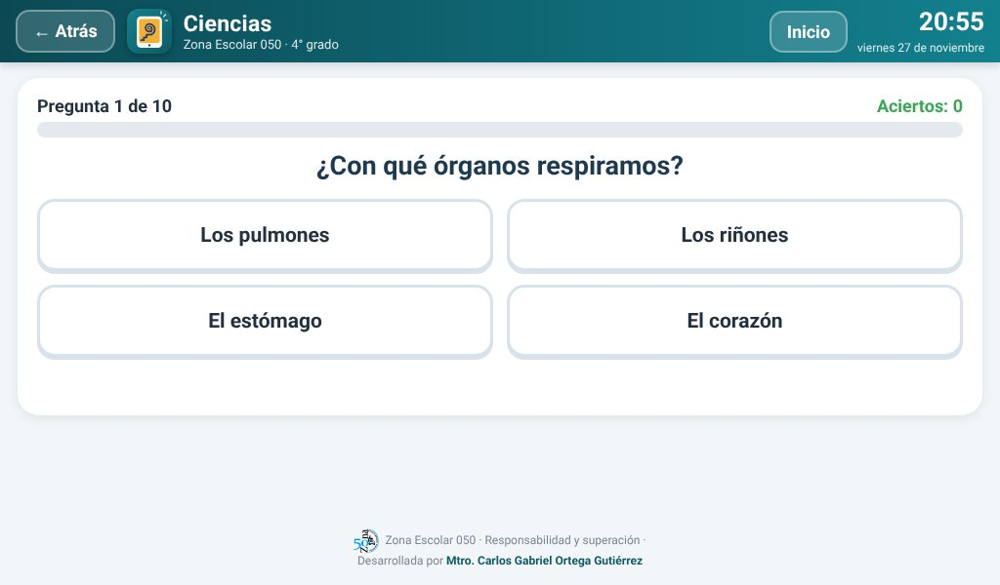
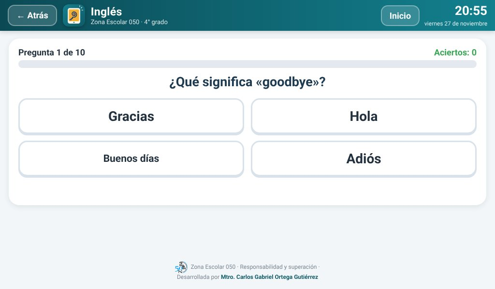
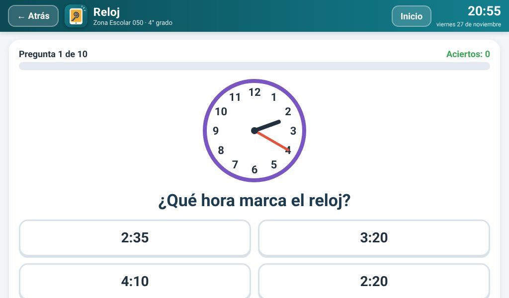
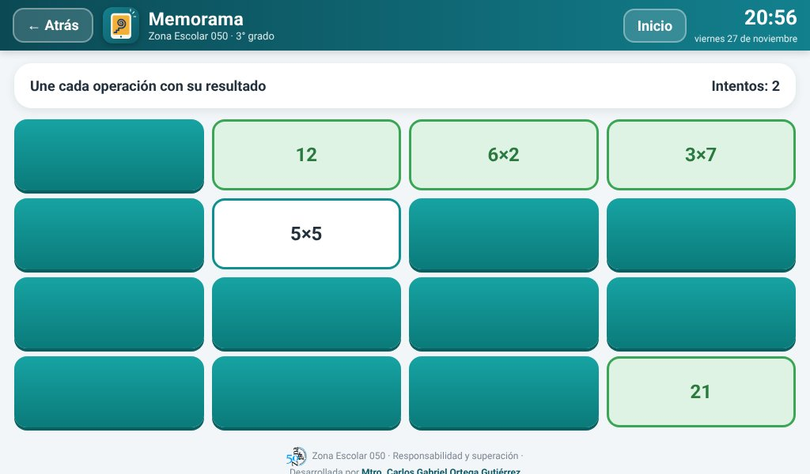
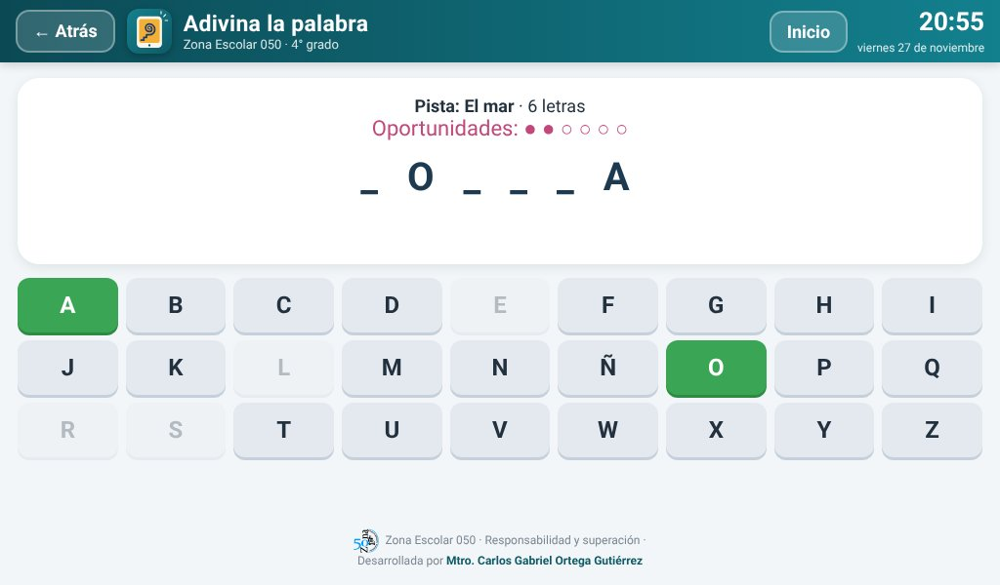
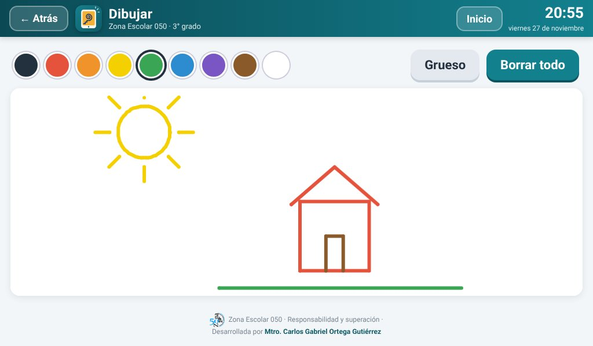
Lo que podrá hacer el maestro
El botón «Maestro» pide una contraseña. Solo con ella se entra a las opciones de la tablet; los alumnos se quedan dentro de Tablet-Tini.
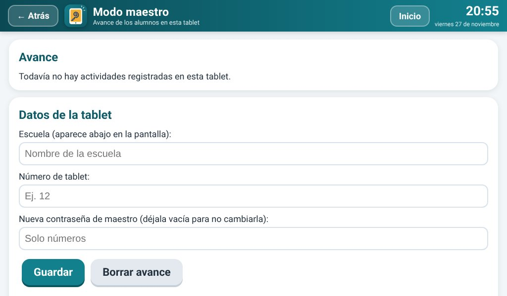
Modo maestro
- Ver el avance de los alumnos en esa tablet: actividades realizadas y porcentaje de aciertos por grado.
- Poner el nombre de la escuela y el número de tablet, para tenerlas identificadas.
- Cambiar la contraseña y abrir los ajustes de la tablet cuando haga falta.
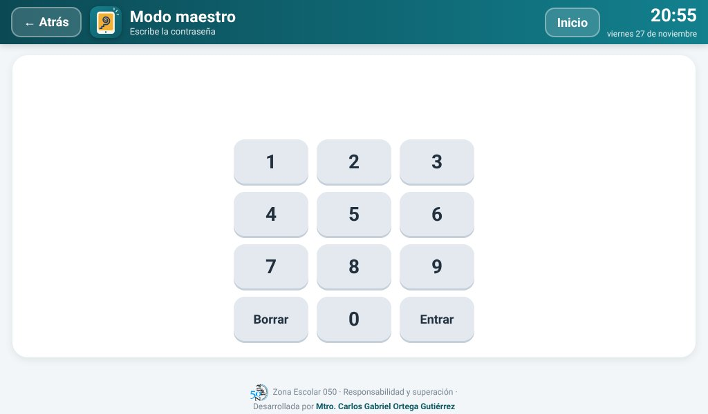
Tablets para el aula, no para distraerse
Tablet-Tini se instala como la pantalla de inicio de la tablet: al encenderla o al tocar el botón de inicio, el alumno regresa siempre a sus actividades. Desde la app no se sale a internet.
Cómo llegará a las escuelas
Tablet-Tini está en pruebas. El plan es avanzar paso a paso:
- Probar la app en las primeras tablets y ajustar lo necesario.
- Instalarla en todas las tablets de la primera escuela, con una tarjeta de memoria y sin internet.
- Llevarla a cada escuela de la zona que tenga tablets guardadas.
¿Tu escuela tiene tablets guardadas que ya no se usan? Avisa a la Supervisión para tomarlas en cuenta.
Contactar a la Supervisión →